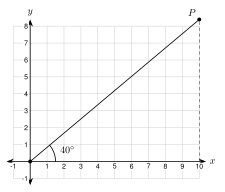
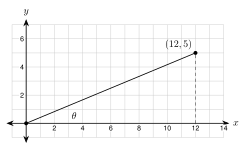

6.2 The Trigonometric Ratios
- Name the opposite side, the adjacent side, and the hypotenuse for an acute angle
- Write the sine, cosine, and tangent of an angle from the side lengths
- Use a calculator in degree mode to find a trigonometric ratio
- Explain that the tangent of an angle is the slope of a line
Warm-Up
1. Yes. Both have a right angle and a 35° angle, so they are similar by AA.
2. c = 62 + 72 = 85
3. 3 ÷ 8 = 0.375
6.2.1Naming the Sides
- The hypotenuse is across from the right angle. It is the longest side.
- The opposite side is across from the angle you choose.
- The adjacent side is the leg that touches the angle you choose.
- When you pick the other acute angle, the opposite and adjacent sides trade places.


a. BC = 8 is opposite
AC = 15 is adjacent
AB = 17 is the hypotenuse
b. Opposite B: AC = 15
Adjacent to B: BC = 8
a. AB (length 17)
b. angle B
6.2.2Why the Ratios Work
- Right triangles with the same acute angle are similar (AA). Their matching ratios are equal.
- So a ratio depends only on the angle, not on the size of the triangle.
| Triangle | Adjacent | Opposite | Hypotenuse | opp ÷ hyp | opp ÷ adj | adj ÷ hyp |
|---|---|---|---|---|---|---|
| △ AB1C1 | 4 | 2.80 | 4.88 | 0.57 | 0.70 | 0.82 |
| △ AB2C2 | 8 | 5.60 | 9.77 | 0.57 | 0.70 | 0.82 |
| △ AB3C3 | 12 | 8.40 | 14.65 | 0.57 | 0.70 | 0.82 |
6.2.3Sine, Cosine, and Tangent
- sin A = oppositehypotenuse (SOH)
- cos A = adjacenthypotenuse (CAH)
- tan A = oppositeadjacent (TOA)
- Write each ratio as a fraction first. Round only at the end.
sin A = 817 ≈ 0.4706 cos A = 1517 ≈ 0.8824 tan A = 815 ≈ 0.5333
sin B = 1517 ≈ 0.8824 cos B = 817 ≈ 0.4706 tan B = 158 = 1.8750
sin B and cos A are equal.
a. sin A = 725, cos A = 2425, tan A = 724
b. 0.2800, 0.9600, 0.2917
Hypotenuse: 62 + 72 = 85, so c = 85 ≈ 9.2195
sin A = 685 ≈ 0.6508 cos A = 785 ≈ 0.7593 tan A = 67 ≈ 0.8571
Hypotenuse 81 + 144 = 15. sin A = 915 = 0.6, cos A = 1215 = 0.8, tan A = 912 = 0.75
For angle A, the side of length 15 is adjacent, not opposite. 1517 is cos A. Correct: sin A = 817.
6.2.4Using a Calculator
- Always use degree mode in this book.
- Check: sin 30° must give 0.5 and tan 45° must give 1.
- The sine and cosine of an acute angle are always between 0 and 1.
a. 0.5736 b. 0.4695 c. 2.9042
a. 0.3090 b. 0.9511 c. 2.0503
6.2.5Tangent Is Slope
- tanθ = oppositeadjacent = riserun = slope
- A road with a rise of 6 per run of 100 has a grade of 6%.

slope = tan 40° ≈ 0.8391
y = 10 · tan 40° ≈ 8.4
slope 0.4663; y ≈ 9.3
tanθ = 6100 = 0.06. The grade is 6%.
tanθ = 9120 = 0.075. Grade 7.5%.
1. In a right triangle, the longest side is the hypotenuse.
2. Sine is opposite over hypotenuse. Cosine is adjacent over hypotenuse. Tangent is opposite over adjacent.
3. A ratio depends only on the angle, because right triangles with the same angle are similar.
4. The tangent of an angle is the slope of the line.
Practice
Use the figure. Name the sides.

1. For angle D, which side is opposite? Write the letter. d
2. For angle D, which side is adjacent? e
3. For angle E, which side is opposite? e
4. Which side is the hypotenuse for both angles? f
Write sin A, cos A, and tan A as fractions, then as decimals to four places.

5. Use the triangle: AC = 5, BC = 12, AB = 13.
sin A = 1213 ≈ 0.9231; cos A = 513 ≈ 0.3846; tan A = 125 = 2.4000
6. Same triangle. Write sin B, cos B, and tan B.
sin B = 513 ≈ 0.3846; cos B = 1213 ≈ 0.9231; tan B = 512 ≈ 0.4167
7. A right triangle has legs 9 and 40 and hypotenuse 41. Angle A is across from the leg of length 9.
sin A = 941 ≈ 0.2195; cos A = 4041 ≈ 0.9756; tan A = 940 = 0.2250
8. A right triangle has legs 12 and 35. Find the hypotenuse. Then find sin A for the angle A across from the leg of length 35.
hypotenuse = 144 + 1225 = 37; sin A = 3537 ≈ 0.9459
Use a calculator in degree mode. Round to four decimal places.
9. sin 20° 0.3420
10. cos 20° 0.9397
11. tan 20° 0.3640
12. sin 55° 0.8192
13. cos 55° 0.5736
14. tan 55° 1.4281
15. sin 80° 0.9848
16. cos 80° 0.1736
17. tan 12° 0.2126
Think about the ratios.
18. What is tan 45°? Why does a 45°-45°-90° triangle give this answer?
1. The legs are equal, so opposite over adjacent is 1.
19. Which is larger, sin 10° or sin 80°? Check with a calculator.
sin 80°. 0.9848 > 0.1736
20. Can sin A ever be greater than 1 for an acute angle A in a right triangle? Explain.
No. The opposite side is a leg, and a leg is shorter than the hypotenuse, so the fraction is less than 1.
Tangent is slope.

21. Look at the grid figure. The line through the origin and (12, 5) makes angle θ with the x-axis. Find tanθ as a fraction and a decimal to four places.
tanθ = 512 ≈ 0.4167
22. A line through the origin makes a 30° angle with the x-axis. What is its slope, to four places? What is y when x = 12, to the nearest tenth?
slope = 0.5774; y = 12 · 0.5774 ≈ 6.9
23. A road climbs 14 feet over a flat distance of 175 feet. Find tanθ and the grade as a percent.
tanθ = 14175 = 0.08; the grade is 8%
Real problems.
24. A ladder reaches 12 feet up a wall. Its base is 5 feet from the wall. The ladder makes angle θ with the ground. Find the length of the ladder. Then find sinθ and cosθ to four places.
length = 13 ft; sinθ = 1213 ≈ 0.9231; cosθ = 513 ≈ 0.3846
25. A roof has a 9/12 pitch. That means it rises 9 inches for every 12 inches of run. Find tanθ. How many feet does the roof rise over a run of 14 feet?
tanθ = 912 = 0.75; rise = 0.75 · 14 = 10.5 ft
26. A ramp rises 2 feet over 20 feet of run. The legal limit is tanθ = 112 ≈ 0.0833. Is this ramp steeper than the limit? Show with tanθ.
tanθ = 220 = 0.1. Since 0.1 > 0.0833, the ramp is steeper than the limit.
27. A skateboard ramp makes a 25° angle with the ground. How many feet does it rise for each 10 feet of horizontal run? Round to the nearest tenth.
10 · tan 25° ≈ 4.7 ft
Find the mistake.
28. Samir says: "cos 40° ≈ 0.7660, so cos 80° must be double that, 1.5320." Find his mistake. Check with a calculator.
Ratios do not double when the angle doubles. cos 80° ≈ 0.1736. A cosine of an acute angle is never more than 1.
Test Practice
A. 2029
B. 2129 ← correct
C. 2021
D. 2120
A. 0.6428
B. 0.7660
C. 1.1918 ← correct
D. 50
Challenge
Opposite 20, hypotenuse 29. Adjacent = 841 − 400 = 21. cos A = 2129, tan A = 2021.
The opposite side is about 11.4 times as long as the adjacent side. The triangle is tall and thin, and a line at 85° is very steep.